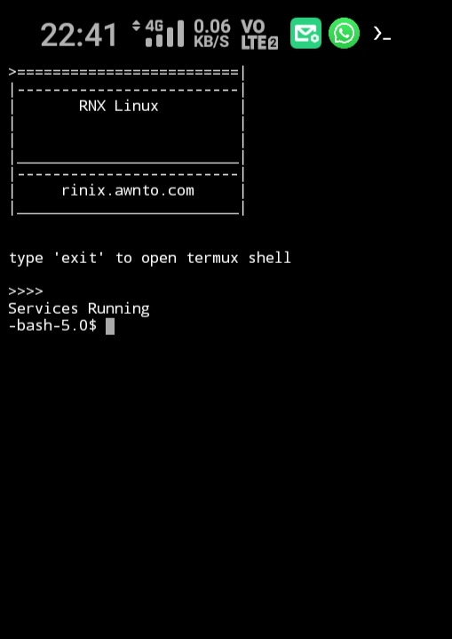
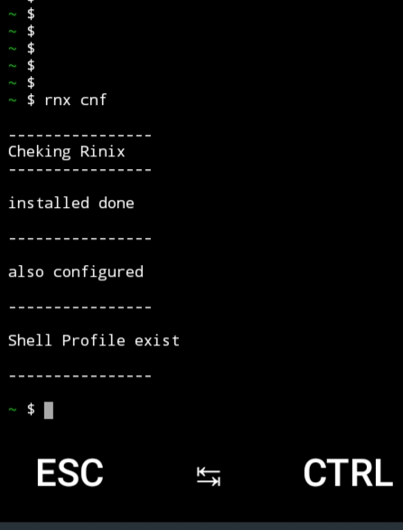

Rinix OS - Installation Guide
---------
Rinix OS is a Desktop GNU/Linux on android kernel(custom linux kernel)
based on debian/ubuntu/kali/nethunter/etc using proot
supports graphical , command line , audio , microphone
using termux , termux-api apps
for audio,mic we use pulseaudio modules
for video output you can use vnc client
we are currenty working on native video output without using tcp,sockets
and android cam as webcam
 
 android app in photo for vnc is
bvnc
linux x11 themes in photo is
papirus-icon-theme
breeze-cursor-theme
adwaita dark xfce4 style
xfce4
xfce4-terminal with custom settings
android app in photo for vnc is
bvnc
linux x11 themes in photo is
papirus-icon-theme
breeze-cursor-theme
adwaita dark xfce4 style
xfce4
xfce4-terminal with custom settings
Features :-
audio,microphone support on proot linux distro
automatic boot with termux app(optional)
full x11 support with openGL
Issue :-
for any issue visit Here
Version :-
Docs : 2.0
up-rnx : 2.5
Rinix : 2.0
Tags :-
RNX V2
Linux in 2 min
( 250MB with GUI )
for android
with audio support
Just 4 easy steps😊😊
audio for proot Linux distro in termux
run GNU/Linux on android
automatic run linux with termux
Desktop on Android
Android as Desktop
On Search :-
keyword "awnto rinix os" on google
Author :- Rishabh Sarswa (Rishu)
 Instagram(Rishu) : Here
--------- Steps for installation -------------
Note : currently this method is only for
'aarch' == 'arm64' devices
soon comming for 'armhf' , 'x86_64'
type 'uname -m' to check your device architecture
if architecture not 'aarch64' you can use old Rinix version Here
Instagram(Rishu) : Here
--------- Steps for installation -------------
Note : currently this method is only for
'aarch' == 'arm64' devices
soon comming for 'armhf' , 'x86_64'
type 'uname -m' to check your device architecture
if architecture not 'aarch64' you can use old Rinix version Here
Step 1 :
download "termux" and "termux api"
from play store
open termux and run commands in gey color text given below
Give Storage Permission to termux
Give microphone permission to termux-api (optional)
apt update
apt install -y pulseaudio sox nano tar termux-api wget
pkg install wget openssl-tool proot -y && hash -r
wget -O up-rnx https://rinix.awnto.com/rnx-get/files/up-rnx
chmod 755 up-rnx
./up-rnx
rm up-rnx
Step 2 :
Step 2 : Download im-rootfs-aarch64.tar.xz
Download rootfs file
and create folder AWN in phone storage
place rootfs file in AWN folder
Download (213MB) with GUI
||Phone_Storage >> AWN >> im-rootfs-aarch64.tar.xz
Step 2 done go to Step 3
OR if you want use your existing rootfs
set location
rnx chrfl
force configure
rnx fcnf
rnx su
then install pulseaudio , tigervnc , sshd , proftpd , --- so on
apt update
apt install nano wget xfce4 pulseaudio openssh-server proftpd tigervnc-standalone-server tigervnc-xorg-extension tigervnc-viewer tigervnc-common dbus-x11
Step 3 :
to update rnx
rnx update
you need to run 'rnx cnf' 3 times to configure
to install rootfs file
rnx cnf
to configure installed rootfs
set username and password
rnx cnf
to set rnx profile
rnx cnf
to check Linux installed correctly
rnx cnf
Step 4 :
connect to vnc over port 5978 (GUI)
extra detail
sshd port is 7022
ftp server port is 7021
Step 5 :
Step 5 : Enjoy
rnx < option >
<option>s are given below
______ __________________
/ \ / \
|option|---| discription |
\______/ \__________________/
help
| print help message : commands
|______________________________
|
check
| check or set configuration
|___________________________
|
cnf
| check or set configuration
|___________________________
fcnf
| force configure or reconfigure
|_______________________________
|
chuser
| change default user
|____________________
|
chrfl
| change root file location
|__________________________
|
run
| open Rinix shell as user
|__________________________
|
su
| open Rinix shell as root
|__________________________
|
boot
| run startup programs
|_____________________
|
auto
| automatic select b/w
| 'boot' or 'run'
|_____________________
|
info
| print user and rfl info
| and also print services status
|_______________________________
|
version
| print version
|______________
|
***
| print help
|___________
|
update
| download and update Rinix files
| need internet connection
|________________________________
in RNX
android_storage /awnto/sdcard
android_storage /home/rishu/sdcard
shared_folder (AWN) /home/rishu/AWN
other_shared /awnto/shared/*
here rishu stands for your username eg /home/user/AWN
-----------------------------------
Solution for libreoffice error in Rinix OS
You can edit file /usr/lib/libreoffice/program/oosplash with any
HEX editor (bless for example). Just find text "/proc/version"
(LibreOffice checks this file) and change to for example "/prod/version".
Then you can create fake empty "/prod/version" file in the filesystem,
then Office starts and works well
fake proc/version file Here
Solution for chromium
use "chromium --no-sandbox" instead of "chromium"
or you can use firefox
----------------------------------
Youtube : Here
Twitter : Here
Instagram(Rishu) : Here
Facebook : Here
WhatsApp(Rishu) : Here
Mail : i.awnto@gmail.com
Telegram : Channnel
Telegram : Group
Telegram : Help Desk
----------------------------------